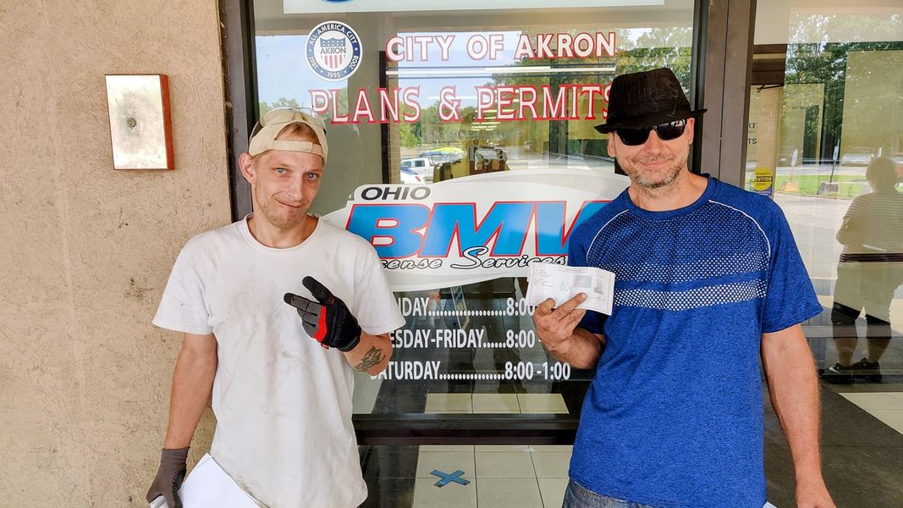

Timeline photos
These 2 guys are sticking with me. Andrew on the left and Rob on the right have lived at the (illegal) @[112716880296603:274:Houseless Movement] Garden since about April. They have lived outdoors for about 4 years. This is them getting their IDs, thanks to your donations. They both want to not live in tents anymore. But it's a slow process that requires a lot of steps and transformative change.